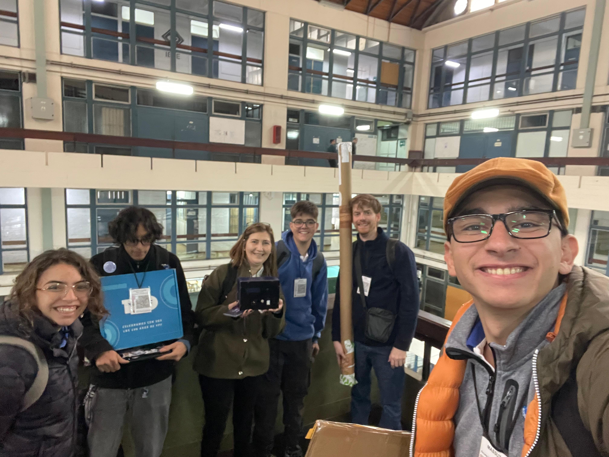
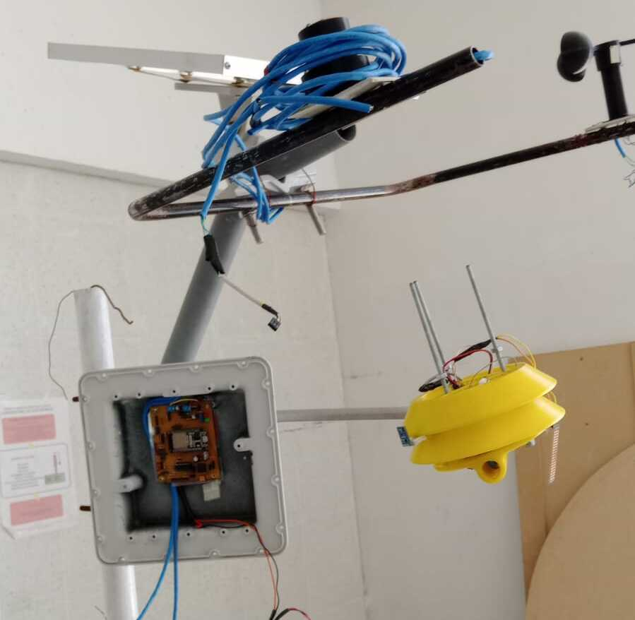

Misión: Integrar activamente a estudiantes de distintos niveles académicos y especialidades técnicas, promoviendo el Aprendizaje Basado en Proyectos (ABP). Generamos un espacio colaborativo de formación práctica donde todos cumplen un rol específico, independiente de sus conocimientos previos.

Visión: Ser un equipo referente dentro de la Escuela Técnica de la Universidad de Mendoza en la implementación del Aprendizaje Basado en Proyectos, destacando por la calidad técnica, la innovación y la inclusión de estudiantes en procesos reales de investigación, desarrollo tecnológico y resolución creativa de problemas.